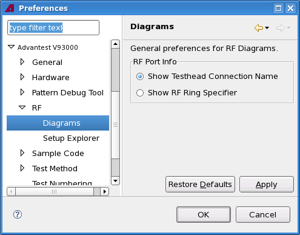

Diagrams preference page
You can change the following preferences on the preference page.
Option |
Description |
|---|---|
RF Port Info |
Specify either the test head connection name or the RF ring specifier to be shown as RF port information. |
The following displays the Diagrams preference page.

Functional changes
- Introduced in SmarTest 6.5.2